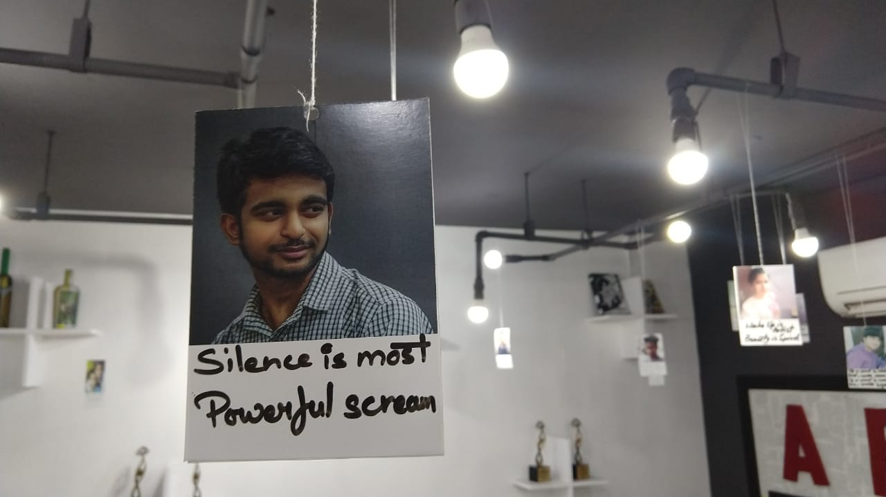

Hey there!
Hey there!
Welcome. I’m Praveen.

I’m a front-end and UI/UX developer based in New Delhi. I love the Web platform and I want to make it better for everyone. And I consider myself to be completely blessed that I get to build it for a living.
I am completing my bachelor's in computers from Indira Gandhi Open National University. I’ve always wanted to study multiple majors because I never wanted to stop learning. I’m grateful that I ended up in a field where one of the major requirements for staying relevant is to continuously keep learning.
Worked with Rahu Designs as a freelancer, building Web sites and application UIs with a strong focus on responsive design, accessibility, performance, and the latest in the area of front-end (CSS, Grid, Design Thinking). I also an active member of Designers and Developers Communities across the Delhi-NCR like GDG-New Delhi, Facebook Developer Circle, also focusing on CSS, Grid, Design Thinking, Responsive Design and accessibility, covering practical tips on how to build front ends using modern tools and techniques that scale and are future-proof.
Some trivia about me:
- I'm conservative yet social. I like to spend my weekends with new people having same interests as me in various communities. Social gatherings for technical and designing purposes are my heaven.
- Music is in my blood and poems, couplets are my oxygen.
- I love simplicity and minimalism as way of life.
- I've a long-term vision and a sense of humour & lots of it.
“I’m aiming to meet and collaborate with other professionals in the web or design industry or open for new challenges and projects.”
Currently I live in New Delhi. If you're looking for someone to work on the web design, ui or ux design feel free to contact me.
praveenpal4232@gmail.com